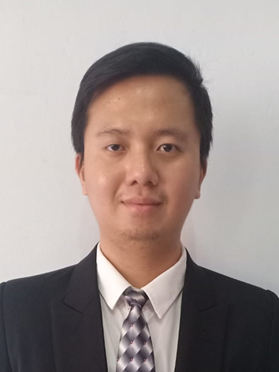

Alexander Jeson Tjowari

Summary
Civil engineer with business consulting experience and interest in Financial Analysis, eager to learn and adept at
tackling complex challenges.
Education
Work Experiences
Project Engineer & Project Coordinator - PT. Intimkara
April 2024 - Present
- Currently overseeing and coordinating activities across three concurrent projects, ensuring timely progress and effective resource allocation.
- Coordinated effectively with internal teams, subcontractors, and stakeholders across three concurrent projects. Ensured clear communication to align project goals and address challenges efficiently.
- Worked closely with various stakeholders and consultants to monitor project progress and address issues, ensuring effective relationship management and resolution of conflicts.
- Identified discrepancies in the Bill of Quantities (BoQ) related to project pricing and communicated these findings during meetings, ensuring that project specifications were addressed.
Business & Management Consultant - PT. Inpartner Optima Integra
June 2022 - September 2023
- Worked on 13 projects, including waste management, financial assessments, and market research, to provide valuable insights and support business development.
- Collaborated with domestic and international clients from diverse industries, including finance, healthcare, and manufacturing to understand their business' goals and challenges.
- Assessed the client's company through meetings, focus group discussions, and financial report reviews to gather insights on current conditions.
- Conducted market research and data analysis to identify growth opportunities, recommended strategic initiatives, and developed impactful investment teasers for potential IPO clients.
PROJECT HIGHLIGHTS:
Project 1: MBT Waste Management Facility Development
- Initiated an in-depth study on infrastructure provision and advanced waste management strategies, with the potential to serve 14 million residents.
- Conducted comprehensive research and analysis to compile daily waste generation data, projecting a significant 37.58% reduction in waste volume through MBT capacity calculations.
- Actively engaged in collaborative meetings with clients and the World Bank, aiming to influence an increase in project funding for enhanced waste management infrastructure.
Project 2: Background Channel Check for Korean-Indonesian Securities & Asset Management Acquisition
- Led thorough background assessments for the acquisition of a security and asset management company, entailing the evaluation of BOD & BOC, and unveiling strategic insights crucial for strategic decision-making.
- Developed a capability matrix for directors and commissioners, which provides structured leadership insights while summarizing critical elements essential for strategic decision-making.
- Conducted comprehensive evaluations of internal transfers, portfolios, and managed funds, adhering to provided instructions to generate valuable financial insights that enhanced organizational alignment and facilitated informed decision-making.
Surveyor - GFA Consulting GmbH
December 2021 - January 2022
- Surveyed 43 points of interest across Makassar by observing, collecting data, and giving insights, which results are for designing the rapid transit bus stations.
- Identified road conditions by observing 5 road corridors across Makassar for designing road widening and flyovers.
- Performed Environmental and Social Impact (ESI) analysis to ensure comprehensive project assessments.
Civil Engineer Intern - PT. Idee Murni Pratama
October 2020 - January 2021
- Evaluated the building foundation's capacity by analyzing borehole data from 7 foundations, the results are used for communicating design improvements according to field conditions.
- Estimated construction cost by calculating the volume and the quantity of the work.
Laboratory Assistant - Bandung Institute of Technology
August 2019 - December 2019
- Mentored 40+ sophomores by giving lectures about the properties of civil engineering materials.
- Examined 24 sophomores by interviewing based on the observation reports, which enabled the sophomores to pass the course.
Skills
Data Analysis
- Microsoft Office
- Tableau
- Google Data Studio
- SQL
Visual Design
- Photoshop
- Adobe Illustrator
Programming
- HTML
- CSS
- JavaScript
- Python (Numpy & Pandas)
Structural Analysis
Language
- Bahasa Indonesia (Native)
- English (Proficient)
- Japanese (Beginner)
- Chinese (Passive)
Certifications
- TOEFL iBT (Score: 94/120; R: 27 L: 23 S: 21 W: 23)
Other